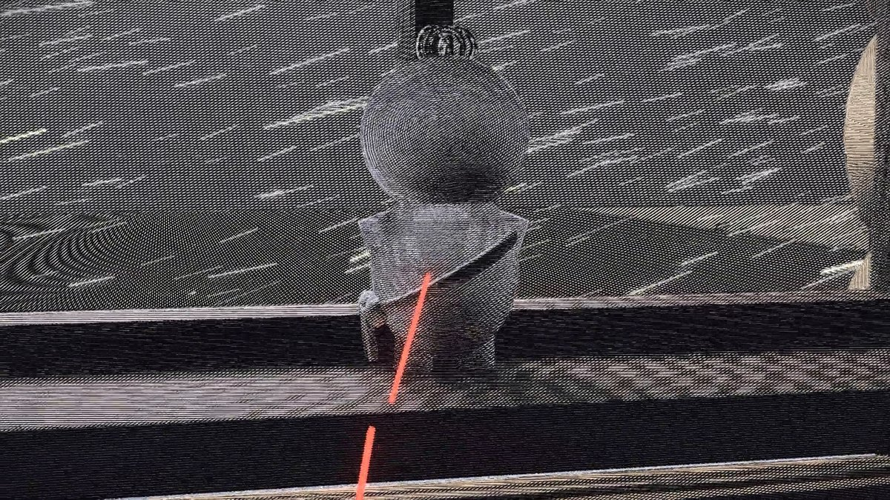
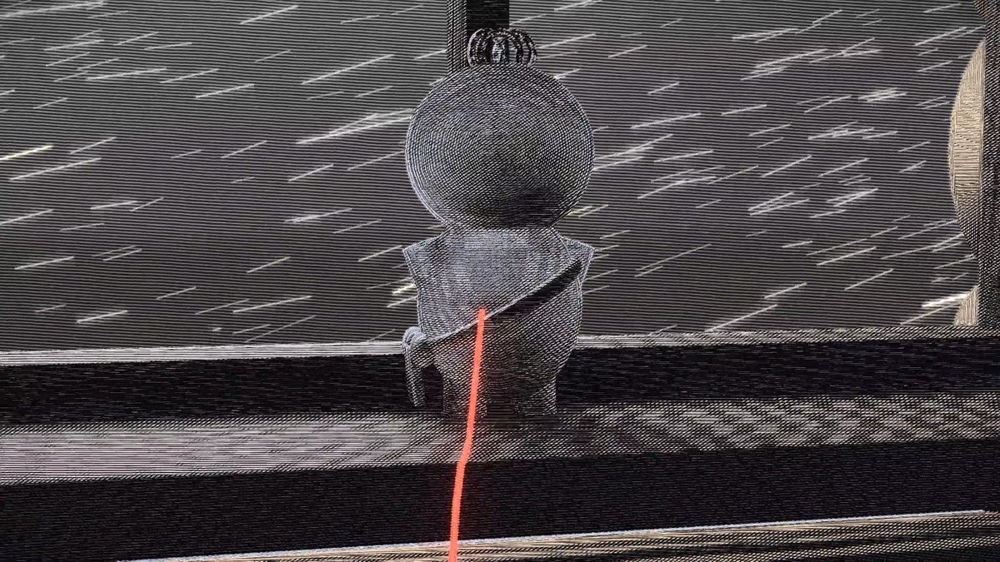
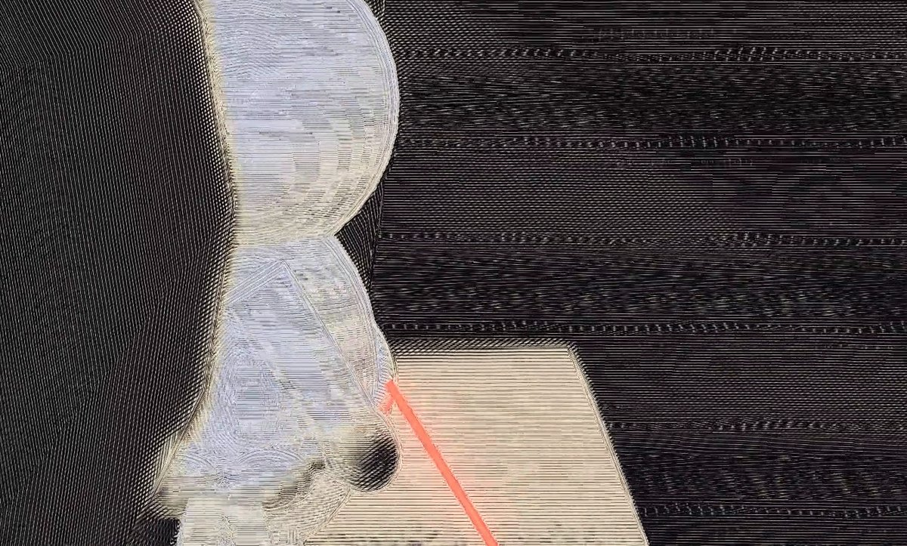
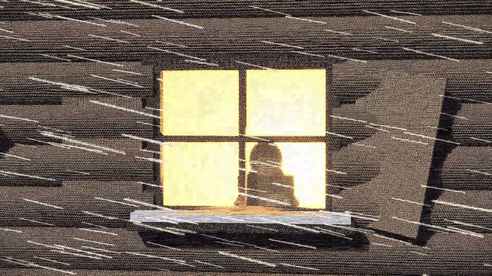
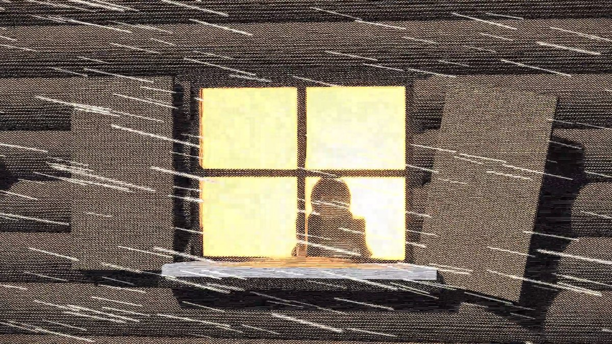
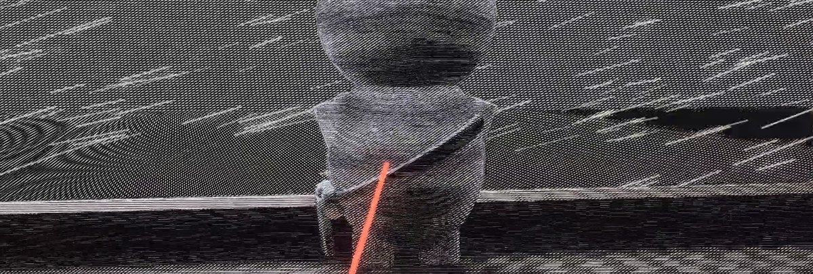
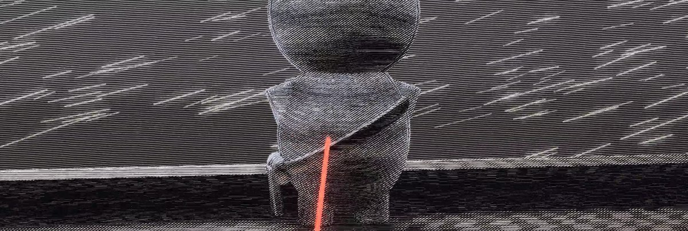

Nothing in the films passes through anything nowand your run is saved as you play
I went through every shot of both films: stills from each shot, an automatic scan for flicker, and frame-by-frame checks wherever the scan or the stills found something. In the prologue, the thread went through the windowsill in two shots, the shutters were sunk into the log wall, and a patch of ground behind the doll flickered on and off. One shot of the epilogue had a figure and the furniture passing through each other. All of it is fixed, the affected shots are re-rendered, and both films are re-cut.
Saves now happen at every pole and whenever you leave. They go straight to a file, so they survive a crash, and Continue on the title picks your run up at the last pole. Begin anew replaces the save.
Please check the cinematics for any overlapping and flickering objects (there are some at least in the first cutscene) and also for things going one through another (in the first cutscene the thread is going right through the windowsill).


BeforeAfterDrag the thread to compare
Before, the red thread ran straight down through the sill board and the table to the spool.

BeforeAfterDrag the thread to compare
Before, the thread cut through the corner of the sill.


BeforeAfterDrag the thread to compare
Before, both shutters were buried in the log wall, and the loose one swung into it.


BeforeAfterDrag the thread to compare
Before, a black wedge of ground switched on and off every other frame.
Measured in the patch behind the doll where the wedge was, over the whole shot. The count is of pixels that flip back and forth between frames, as opposed to moving. Snow still blows through that patch, so it never reaches zero.
| Behind the doll on the sill | Before | After |
|---|---|---|
| Flicker (back-and-forth pixels) | 0.070 | 0.046 |
| Frames where more than 5% of the patch jumps | 122 | 75 |
| Biggest single jump (share of the patch) | 21.6% | 9.7% |
Across whole frames the numbers hardly move, by design. Blowing snow and the engraving's deliberate re-etching every few frames make up most of the movement. The fault was a small, sharp patch, and the slider above shows it best.
The game should be saved locally as I play, each pole is a checkpoint and when I reopen the game I should be able to continue the last run as well. Starting a new game overrides the save.
save.json in the game's profile folder), written in full each time, so a crash or a killed process can't leave half a save. The old browser-storage copy is still kept, and older saves are picked up from it once.| Test: three real launches of the game | Result |
|---|---|
| 1. Begin, walk to the first pole, pick up a skein after it, quit | Pole 1 is the checkpoint; the save is written to the file |
| 2. Launch again | Title shows Continue; it resumes at pole 1, skein kept |
| 2. Then Begin anew, quit | New run at the cottage |
| 3. Launch again, Continue | The new run, not the old one |
scripts/cine/shots.py · sets.pyThread routed over the sill and table, spool on the floor, shutters in front of the wall, the epilogue fix.scripts/cine/post.pySteady lines where positions were clamped or one set of lines had no gradient.electron/main.js · preload.jsThe save file (atomic write, read, clear); a separate profile for test runs.app/src/main.jsSave at every pole, on start, on leaving and on close; Continue reads the file.